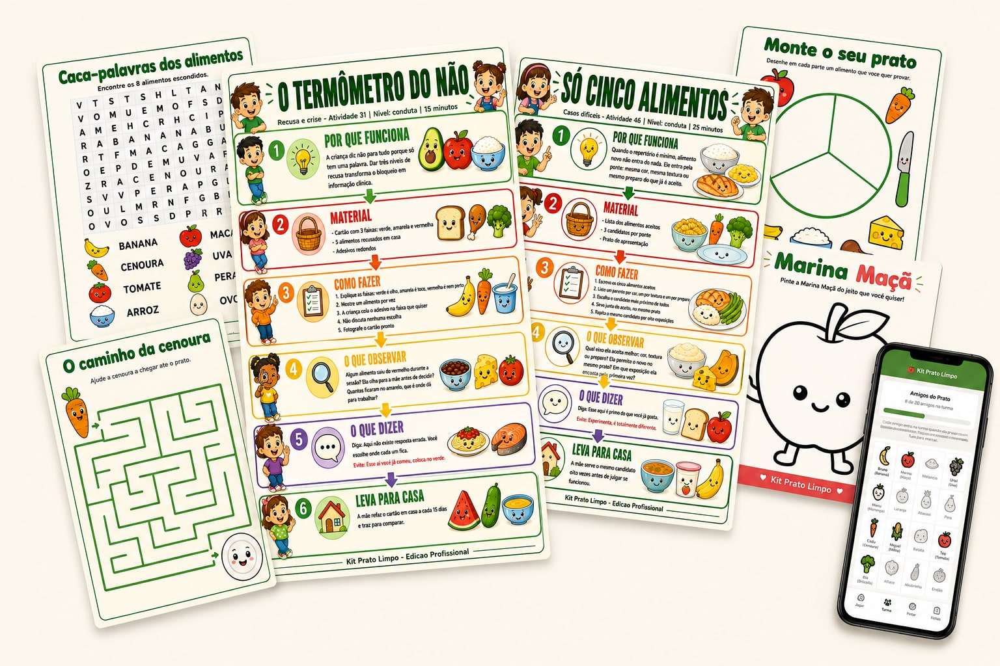
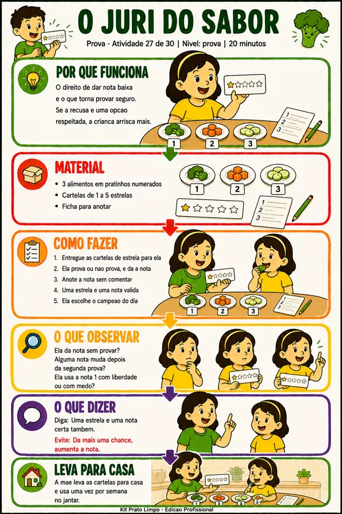
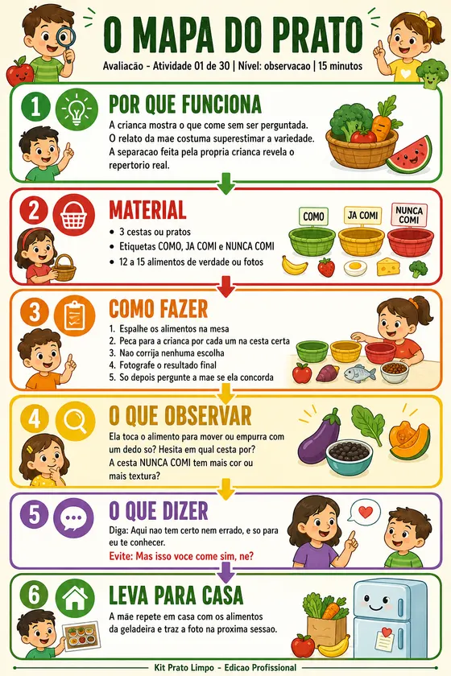
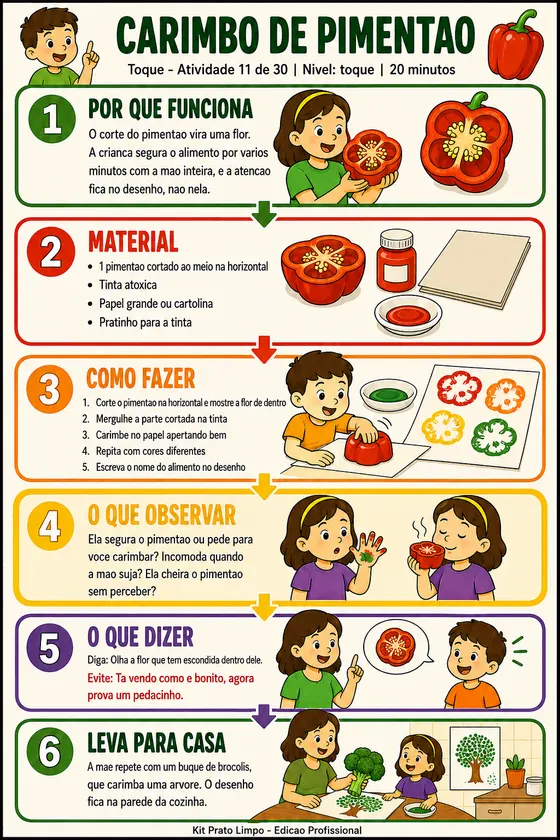
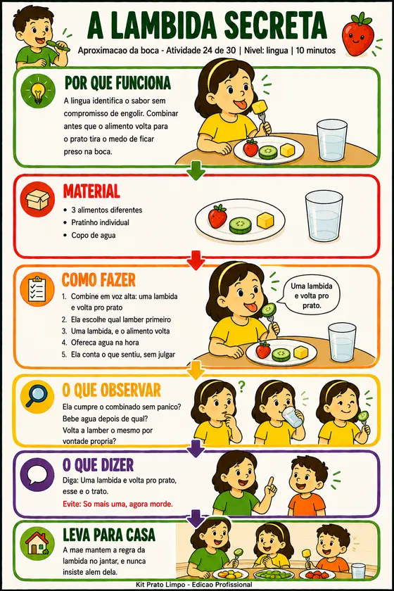
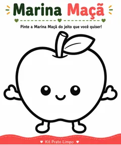
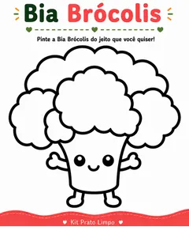
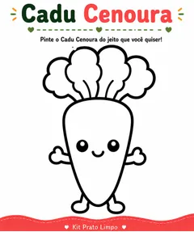
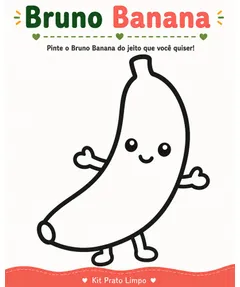
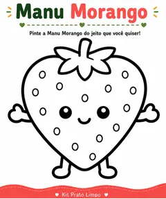

60 fichas para aplicar na sessão, 129 para a família levar pra casa e o aplicativo para a criança usar entre as consultas.
A ficha de avaliação você aplica já no próximo atendimento, com alimento de verdade na mesa.
Pagamento único · sem mensalidade

A mãe sai da consulta convencida. Na terça já esqueceu metade, e volta em 30 dias sem nada aplicado.
Você monta atividade do zero, paciente por paciente. Meia hora de preparo que não entra na sua agenda nem na sua nota fiscal.
Não existe nada tangível pra entregar no fim da sessão. O pediatra entrega receita. Você entrega uma lista e a esperança de que a mãe lembre.
Sem tarefa entre consultas, o retorno esfria. Seletividade é acompanhamento longo, e a família some no meio do processo.
A mãe volta dizendo que não deu certo, e você não tem como saber o que ela fez de fato em casa.
Uma para a sessão, uma para a casa, e uma para os dias entre uma consulta e outra.
Para aplicar na sessão, com alimento de verdade. Em 12 etapas, do mapeamento até a alta.
Em 11 blocos. Você imprime e entrega conforme a etapa da criança, sem preparar nada.
A criança pinta na tela com o dedo e destrava um personagem a cada alimento que prova.
O kit completo, do jeito que a família recebe, mais o protocolo de sessão que só existe nesta edição.
Cada ficha cabe em 10 a 20 minutos de consulta e usa alimento de verdade.
Você bate o olho e já sabe o que fazer. Sem estudar nada antes.

Os três em laranja não existem em material feito para os pais. São eles que transformam a atividade em atendimento.



Três das 60 fichas de consultório.
A criança já ia pedir o celular. Aqui ele passa a jogar a favor da comida em vez de contra.





5 dos 20 amigos do prato.
Está escrito dentro do material, na terceira página.
Montar uma atividade do zero para um paciente leva entre 20 e 30 minutos. Você não fatura esse tempo.
No primeiro paciente o kit já se pagou. E ele não acaba: são 189 fichas e um aplicativo para atender quantas crianças aparecerem, por quantos anos você quiser.
Uma consulta paga o kit inteiro e ainda sobra.
Pagamento único, sem mensalidade.
7 dias de garantia. Abriu, não era o que você esperava, devolvemos o valor. Sem pergunta e sem burocracia.
Ou copie o código abaixo no app do seu banco.
Assim que o Pix cair, o acesso é liberado nesta tela e enviado por e-mail.
O acesso à Edição Profissional foi enviado para o seu e-mail. Se não aparecer em alguns minutos, confira o spam ou escreva para kitpratolimpo@gmail.com.
Pode. É exatamente pra isso que existe a licença de uso profissional, e ela vem escrita dentro do material. Imprima quantas cópias precisar, entregue ao paciente, use em grupo e em oficina, sem limite e sem prazo. O que não pode é revender ou publicar as fichas.
Logo depois do Pix confirmado, chega no seu e-mail o link do aplicativo, que já é seu acesso. Dentro dele tem o botão para baixar o kit completo em PDF. Leva alguns minutos, não é entrega manual.
Não. Tudo pode ser impresso, e tudo pode ser usado direto na tela do celular ou do tablet. As atividades de pintar funcionam com o dedo.
As atividades trabalham aproximação sensorial em ritmo respeitado, sem pressão para comer, que é uma abordagem comum no acompanhamento de crianças autistas com seletividade. Mas quem decide o que cabe em cada caso é você, dentro da sua conduta e do seu plano terapêutico.
Não. É pagamento único de R$ 67,00. Você continua com o material e recebe as atualizações sem pagar de novo.
Kit Prato Limpo · Termos · Privacidade